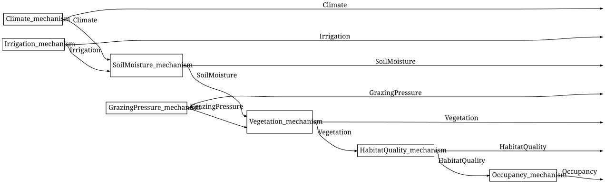
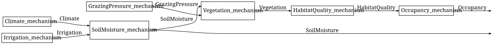

Wiring diagrams and evaluation
Simon Frost
- Overview
- Setup
- The wiring-diagram view
- From diagrams to expressions
- Evaluation: two routes to the same joint
- Sampling
- Summary
- References
Overview
A Bayesian network is a string diagram in a Markov category (Fritz 2020; Cho and Jacobs 2019): each mechanism is a box κ : P_1 ⊗ ... ⊗ P_k → X, a variable read by several mechanisms is copied, and a variable that is not reported is discarded. This vignette draws the reference network as a Catlab wiring diagram, turns it into a free-category expression, evaluates that expression in the category of finite stochastic kernels, and checks that the result agrees with the brute-force joint distribution – that is, that the categorical evaluator and the chain-rule product of the conditional probability tables (Koller and Friedman 2009) give the same joint state (Proposition 1 of the package specification).
Setup
CategoricalBayesianNetworks.jl re-exports everything in BayesianNetworks.jl, so this one using gives both the structural layer and the categorical one. The reference model of BayesianNetworks.jl’s first vignette, “Bayesian networks as networks of mechanisms”, supplies both the syntax and the kernels.
using CategoricalBayesianNetworks
using Random
m = reference_habitat_model()
bn = syntax(m)
nparts(bn, :Variable), nparts(bn, :Mechanism)(7, 7)The wiring-diagram view
to_wiring_diagram builds a WiringDiagram with one box per mechanism. Ports carry a VariablePort (name and states) and boxes a MechanismBox (name and kernel reference). A wire runs from the port that produces a variable to every port that consumes it: fan-out is an implicit copy, and an output port that no wire leaves is an implicit discard, which is how a wiring diagram encodes the mcopy and delete of a Markov category without drawing them as boxes.
d = to_wiring_diagram(bn)
nboxes(d), nwires(d)(7, 13)Each box carries the mechanism it came from, so the diagram is not an anonymous graph:
box(d, 5)Box(Vegetation_mechanism, [SoilMoisture{low,medium,high},GrazingPressure{low,high}], [Vegetation{sparse,moderate,dense}])By default the outer inputs are the exogenous variables (none, for a closed network) and the outer outputs are all the other variables in topological order, so the diagram is a state I → Climate ⊗ ... ⊗ Occupancy. Catlab’s Graphviz renderer draws it, with the labels of the network:
to_graphviz(d)
SoilMoisture fans out to the Vegetation box and to the outer output. Choosing the outputs changes the interface: here every variable but Occupancy and SoilMoisture is discarded.
to_graphviz(to_wiring_diagram(bn; outputs = [:Occupancy, :SoilMoisture]))
The view is invertible on the diagrams it produces (flat diagrams of single-output boxes with typed ports):
bn2, ins, outs = from_wiring_diagram(d)
canonicalize(bn2) == canonicalize(bn), ins, outs(true, Symbol[], [:Climate, :Irrigation, :SoilMoisture, :GrazingPressure, :Vegetation, :HabitatQuality, :Occupancy])From diagrams to expressions
A wiring diagram is a graphical presentation of a morphism; to_hom_expr turns it into a term of FreeMarkovCategory, the free Markov category generated by one object per variable and one morphism per mechanism. Catlab’s algorithm normalises fan-out into mcopy and dangling wires into delete, then reduces the diagram by series and parallel composition.
expr = to_hom_expr(FreeMarkovCategory, d)
dom(expr), codom(expr)(munit(), otimes(Climate,Irrigation,SoilMoisture,GrazingPressure,Vegetation,HabitatQuality,Occupancy))The package also builds such expressions directly from the syntax, without going through a diagram. to_free_expression adds one variable at a time in topological order, copying the parents’ wires, braiding the copies to the right, and applying the mechanism’s generator (“keep everything”); wiring_expression does the same from a wiring diagram and, unlike Catlab’s reduction, also handles boxes whose outputs are all discarded.
expr2 = to_free_expression(m)
expr3 = wiring_expression(d)
codom(expr) == codom(expr2) == codom(expr3)trueThe expressions differ syntactically (there are many ways to write the same string diagram) but denote the same morphism, as the evaluation below shows.
Evaluation: two routes to the same joint
free_generators interprets the generators in FinStoch: each variable name goes to its FiniteSpace, each mechanism name to its FiniteKernel. MarkovCategories’ evaluate then applies the functor to the expression.
gens = free_generators(m)
gens[:Vegetation_mechanism]FiniteKernel{Float64}(SoilMoisture{low,medium,high} ⊗ GrazingPressure{low,high} → Vegetation{sparse,moderate,dense})
low,low medium,low high,low low,high medium,high high,high
sparse 0.6 0.2 0.05 0.8 0.4 0.2
moderate 0.3 0.5 0.3 0.15 0.45 0.5
dense 0.1 0.3 0.65 0.05 0.15 0.3Applying the functor to the whole expression gives a state I → Climate ⊗ ... ⊗ Occupancy, whose codomain lists the variables in the order the diagram reports them:
J_cat = evaluate(expr, gens)
J_cat.codomFiniteSpace(Climate{dry,normal,wet} ⊗ Irrigation{low,high} ⊗ SoilMoisture{low,medium,high} ⊗ GrazingPressure{low,high} ⊗ Vegetation{sparse,moderate,dense} ⊗ HabitatQuality{poor,good} ⊗ Occupancy{absent,present})categorical_joint packages this for to_free_expression, and joint_distribution computes the joint by brute force, enumerating every assignment and multiplying the mechanisms’ tables. The claim (Proposition 1 of the package specification) is that the two agree: the joint distribution equals the product of the conditional probability tables, whether that product is taken by enumeration or by the functor from the free Markov category into FinStoch. The test suite checks it on random networks and here it holds on the reference network for all three expressions:
J = joint_distribution(m)
(J_cat ≈ J, categorical_joint(m) ≈ J, evaluate(expr3, gens) ≈ J)(true, true, true)The diagram with only two outputs evaluates to the corresponding marginal:
d2 = to_wiring_diagram(bn; outputs = [:Occupancy, :SoilMoisture])
evaluate(to_hom_expr(FreeMarkovCategory, d2), gens) ≈ marginal(m, [:Occupancy, :SoilMoisture])trueBecause the joint is a FiniteKernel, the usual queries are kernel operations. marginal and conditional do them for a model (the first argument is the model, evidence can be passed):
marginal(m, :Occupancy).table2-element Vector{Float64}:
0.5237590625000001
0.47624093750000007conditional returns a kernel rather than a number, so a single entry is read off with probability; extracting such a kernel from a joint state is disintegration (Cho and Jacobs 2019):
probability(conditional(m, :Occupancy, :Vegetation), :present, :dense)0.6675Sampling
sample draws ancestrally in topological order. With enough samples the empirical frequencies approach the marginal:
rng = MersenneTwister(2026)
draws = sample(m, 20_000; rng = rng)
draws[1]Dict{Symbol, Symbol} with 7 entries:
:Vegetation => :dense
:GrazingPressure => :low
:HabitatQuality => :good
:SoilMoisture => :medium
:Occupancy => :present
:Climate => :wet
:Irrigation => :lowemp = empirical_marginal(draws, :Occupancy, space(m, :Occupancy))
round.(emp.table; digits = 3), round.(marginal(m, :Occupancy).table; digits = 3)([0.524, 0.476], [0.524, 0.476])maximum(abs.(emp.table .- marginal(m, :Occupancy).table)) < 0.02trueSummary
The wiring-diagram view is invertible on the diagrams the package produces, and both it and to_free_expression compile a network into a term of FreeMarkovCategory whose mcopy and delete make the sharing and the discarding explicit. Evaluating that term in FinStoch gives the same joint state as enumerating every assignment and multiplying the conditional probability tables, so the categorical evaluator is a second, independent implementation of the semantics. The next vignette, Open networks and composition, gives networks an interface and composes them. Observation versus intervention, which uses this semantics to separate conditioning from the do operator, is a vignette of BayesianNetworks.jl.
References
Cho, Kenta, and Bart Jacobs. 2019. “Disintegration and Bayesian Inversion via String Diagrams.” Mathematical Structures in Computer Science 29 (7): 938–71. https://doi.org/10.1017/S0960129518000488.
Fritz, Tobias. 2020. “A Synthetic Approach to Markov Kernels, Conditional Independence and Theorems on Sufficient Statistics.” Advances in Mathematics 370: 107239. https://doi.org/10.1016/j.aim.2020.107239.
Koller, Daphne, and Nir Friedman. 2009. Probabilistic Graphical Models: Principles and Techniques. MIT Press.